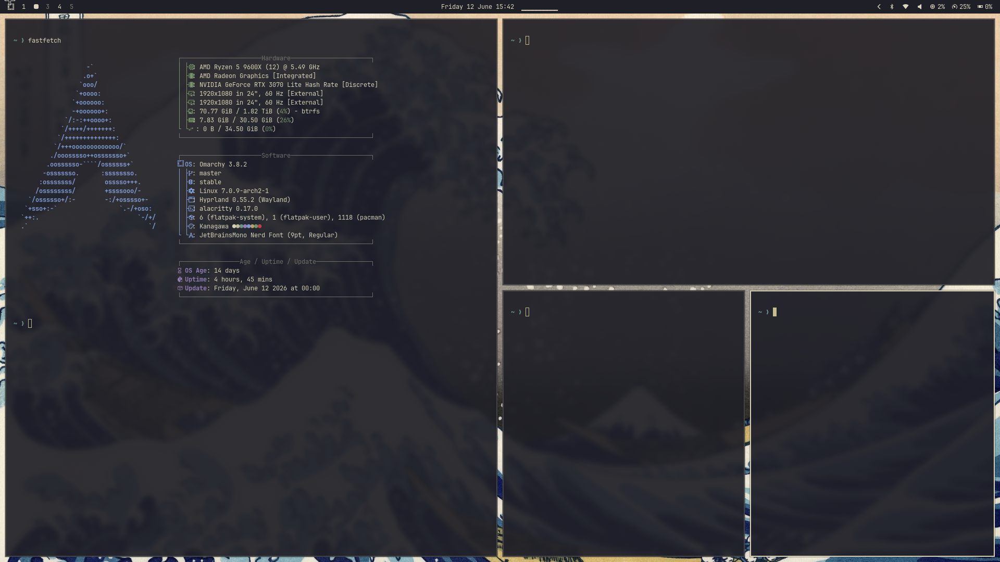

Act I · Systeem
Omarchy · mijn eigen Linux-systeem
Mijn PC omgezet naar een volledig ander besturingssysteem (Arch + Hyprland) en zelf geconfigureerd. Hier leerde ik de terminal vanaf nul: basis-commando's, file-system, package management.
Bracht me: terminal-vaardigheid die ik nu overal nodig heb. Voor Omarchy zelf, maar ook voor mijn automatisering via WSL (Windows Subsystem for Linux) op de werk-laptop. Echt uit mijn comfortzone.